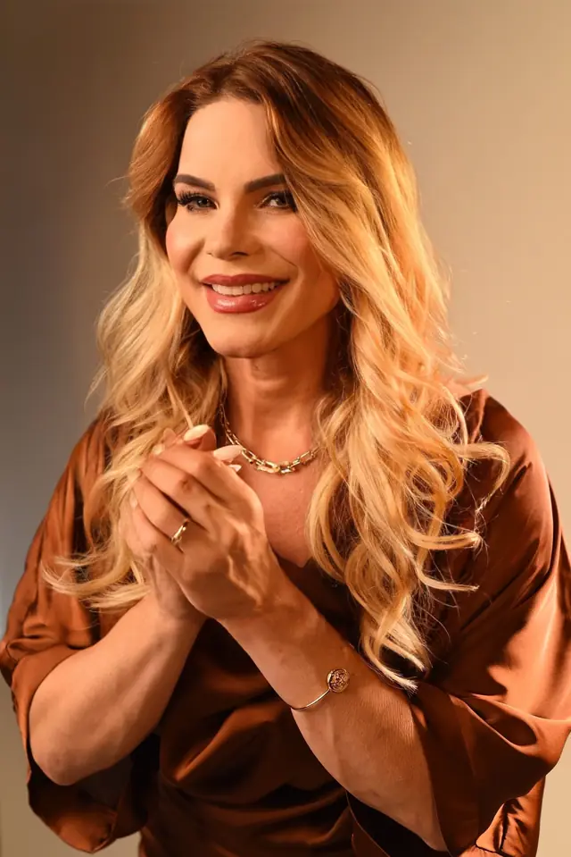
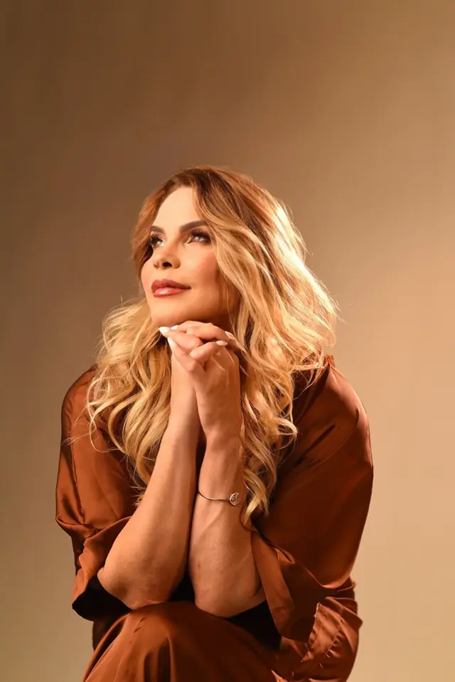

0%

Cansada e sem energia? Descubra o que o seu corpo pede.

Cansada e sem energia? Descubra o que o seu corpo pede.
Cansaço, intestino preso e peso que não sai não são normais. Ao vivo, a naturopata Carine Rodrigues mostra a causa e como recuperar a sua energia.
Quero recuperar minha energia →Lote 01 por apenas · últimas vagas
Já trocou a alimentação, já tomou suplemento, já fez exame. Recebeu orientações genéricas e continua sem respostas. No fundo, a sensação é de que ninguém olhou para você por inteiro.
Saúde não é só a ausência de doença. É ter disposição para viver.
O cuidado começa quando alguém olha para você por inteiro, e não só para o exame da vez.
Em vez de olhar um sintoma isolado, a Carine observa o terreno onde ele nasce. São 8 fatores que, juntos, mostram por onde começar.
O que você come, quando come e como seu corpo responde.
O intestino como base da energia, da imunidade e do humor.
O cuidado mais simples, e o mais esquecido no dia a dia.
Por que o peso trava e a disposição some.
Dormir não é o mesmo que descansar e se recuperar.
Como a rotina e as emoções aparecem no corpo.
Pequenas escolhas diárias que somam ou subtraem saúde.
Sua história, sua fase da vida e suas necessidades.
Identificar necessidades, organizar prioridades e construir um cuidado que faça sentido para você.
Os sinais mais comuns (cansaço, intestino, sono, peso e hormônios) e o que eles podem estar mostrando sobre o seu terreno.
Onde as orientações genéricas falham e como os 8 fatores se conectam no seu dia a dia.
Como organizar prioridades e começar uma jornada de cuidado com consciência, constância e responsabilidade.
Naturopata, empreendedora e especialista em saúde integrativa, fundadora do Instituto Integrativo Carine Rodrigues. São mais de 15 anos dedicados ao desenvolvimento humano e a uma saúde mais profunda e consciente.
A missão nasceu da própria história. A perda da mãe para o câncer despertou uma busca intensa por conhecimento sobre saúde e qualidade de vida. Desafios físicos e emocionais, superação e reconstrução fizeram a Carine olhar para o ser humano com mais profundidade, empatia e respeito.
Hoje, ela conduz um atendimento individualizado e humanizado, que começa pela escuta e cuida de cada pessoa em sua totalidade: corpo, mente e espírito.
“Porque o tratamento vai além. O cuidado começa quando alguém olha para você por inteiro.”
Nada de promessas milagrosas. Informação, responsabilidade, consciência e respeito à individualidade de cada pessoa.
Dois dias online e ao vivo para entender o que o seu corpo está dizendo e dar o primeiro passo no seu cuidado.
Acesso completo à imersão ao vivo com Carine Rodrigues.
Ficou com alguma dúvida? Fale com a equipe no WhatsAppA equipe da Carine fala com você pelo WhatsApp que você informou.
Você não precisa continuar convivendo com o cansaço, sem respostas. O próximo passo é entender o seu corpo, em dois dias, de onde você estiver.

A imersão é online e ao vivo, em dois dias. O link de acesso chega pelo WhatsApp que você informou no cadastro.
Sexta-feira e sábado, 11 e 12 de dezembro de 2026. Horário: A confirmar (horário de Brasília).
Não. Tudo é explicado de forma simples, para quem quer entender melhor o próprio corpo.
Não. O conteúdo é educativo e não substitui avaliação, diagnóstico ou tratamento com profissionais de saúde. Não interrompa nenhum tratamento sem orientação.
Sim. Os 8 fatores do terreno biológico valem para homens e mulheres adultos que querem cuidar da saúde de forma mais ampla.
Não. A Carine não trabalha com promessas milagrosas. Os resultados dependem de cada organismo, de acompanhamento profissional e da constância de cada pessoa.
Conteúdo educativo sobre saúde integrativa e qualidade de vida. Não substitui consulta, diagnóstico ou tratamento médico.